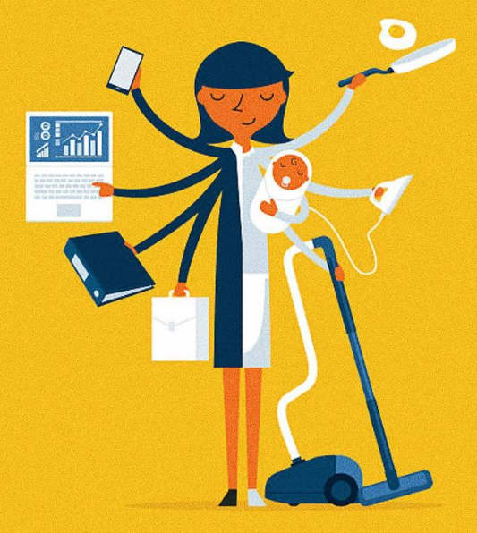
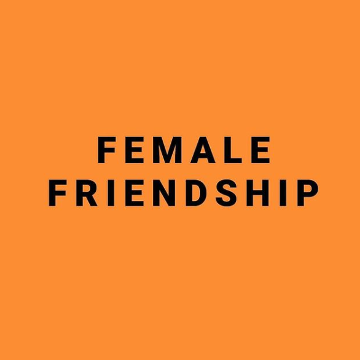
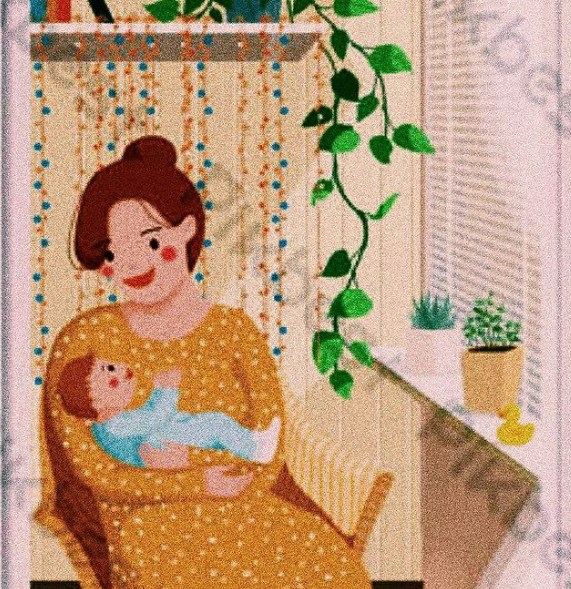

Richi.Writes
Welcome to the blogs of Richita
Global Pandemic
Covid-19 May 1,2020
richi.writes This global pandemic is surely the hardest phase of our life and our generation will bore the hell out of our kids with these stories. The world is going through so much right now and it's been the craziest time in my whole 17 years life. Our generation has always been very outgoing and we're so not used to staying home for a whole month. Everything is uncertain and everyday we are signing up for the unknown. As unwanted as this is, we actually ...got a lot of time in our hands. I mean, who would think of sleeping till 2 pm on a busy tuesday? Days after days I have just been sleeping all day all night or watched movies. I have never craved normalcy more. But I think this pandemic really gave us enough time for self reflection and somehow an opportunity for personal development. Life has slowed down. I have seen people actually using this time to try something new like painting, singing, cooking (ami ekhon chef), cutting their own hair (amio) which they never thought they could do. Some have taken up hobbies that were long forgotten, some have simply surrendered to their craze for netflix. We all got some family time. I have picked up writing again and I have seen people flying kites from their rooftops. People are exploring themselves in a completely different way which probably the pre-pandemic stage wouldn't permit. Because none of us really had the time OR mood to engage in any of these after continuous exhausting days of work. Remember when we cancelled plans just to stay home? Humans. We wanted a break when we were busy and now we miss Dhaka traffic looking at the empty streets. The busiest city is engulfed in loneliness. But when this ends, I promise to never take normalcy for granted again. I would love to believe this is a pause to be resumed very soon. We have learnt how important human connection is only during #socialdistancing. But one day, this will end. Dhaka, the city of hustles, the horns of buses, the roadside vendors, the fuchka on roads will be back again. When? I don't know. But I know for a fact that this will end. Human race will continue. Let's survive this together and emerge stronger than ever when this is over. Let's get well together.
Humanity
Skin May 3,2020
richi.writes I have always been considered 'privileged' for being fair skinned. In a society where being 'fair skinned' is considered to be more important than being 'fair minded', mirrors everyday witness the shattering of lots of confidence and self esteem. In a culture where mothers give their daughter turmeric paste to lighten her skin tone, where 'fair is lovely' is a perpetual belief, where girls with a darker shade grow up convinced that anything and everything is better than being dark skinned, it is utterly impossible ...to uplift the humanity. Everytime a girl hears "you're pretty for a dark shade", it breaks every ounce of self confidence she ever had. Novels written about the hero falling in love with the buttery skinned girl spare no room for the unheard struggles of the 'ordinary' looking people. We say "skin color doesn't matter" but people who have been lathering their soft faces with fairness creams refuse to believe it. Does our coloaration really dictate who we are? Beauty does NOT come free with the fairness creams, beauty is NOT defined by magazine covers with light skinned models. When someone comments on a picture "you're so fair", people reply with "thank you" because they take 'fair' as a compliment. I don't blame them because the society has taught us "snow white" is pretty and dark skinned women are doing great DESPITE their dark skin as if it was supposed to be an obstacle they overcame. We have one of the richest kind of skins being bangalees. When we are proud of how we look, when we disagree to be 'fake', when we are vocal about our opinions to create an identity of ourselves, the society will bow down before the boldness we have to offer. For once, let's believe the amount of melanin we have DOES NOT determine who we are. It's high time we focused on our minds being fair instead of our skin.
Richita Tarafder
I would like to call myself a writer, but only in my heart. I mean, writing has always been my go-to and this is what I love doing the... most. But I have never been brave enough to expose my writings. I have always confined them to myself because my writings are the exact reflections of who I am, what I feel, my thought process, my struggles, my failures and my deepest insecurities. The thought of 'actually' posting my writings in a public platform for all to see has been very scary. I had the fear of dismissal, getting rejected if I ever wanted to publish, or worse, people laughing at my meaningless efforts to write bullshits. I did not know if I was even up to the mark and honestly, I wasn't prepared to find out the answer I didn't want to know. Recently, I have been very detached from writing. The busier life has become, the more I have succumbed to social media, hangouts and rushing hours of school and coachings and exam pressures. I haven't held a pen for anything other than class notes for a long time now. There were times I kinda tried, but I didn't give it enough time for the words to stream naturally. I got frustrated and the doodled pages found their shelter in my wastepaper basket. I threw away more than I wrote. For someone who has always found escape from chaos in writing, it was too hard to digest. I remember I cried because I was no longer being able to create a world of words on a paper anymore. I felt really helpless as writing was my form of therapy. I know I did an injustice to my heart by distancing myself from writing. But I promise to get back to it. Today when I decided to open this account, completely out of spite, I felt a sense of relief. I feel the familar peace again. I smile as I realize this is where I belong, this is what I'm a natural at. And I understand that this is a work in progress. Maybe more of a work than progress but this is what I love doing and I will continue loving writing till I breathe my last. Today when I decided to 'actually' put myself out there, I could almost hear my words thanking me for finally setting them free. So here's all of your stupid, typical chatterbox Richita who is finally doing what she loves.
More...
-

Super Mom
I am the only child of my... -

Female Friendship
How exactly are female friendships.... -

Maa
"Tujhe sab hai pata hai na maa...
Tags
Daily Life Creativity Writings Ideas Knowlegde Happiness Ideas Facts Family News Poems Love Friends Emotions Asthetics Motivations